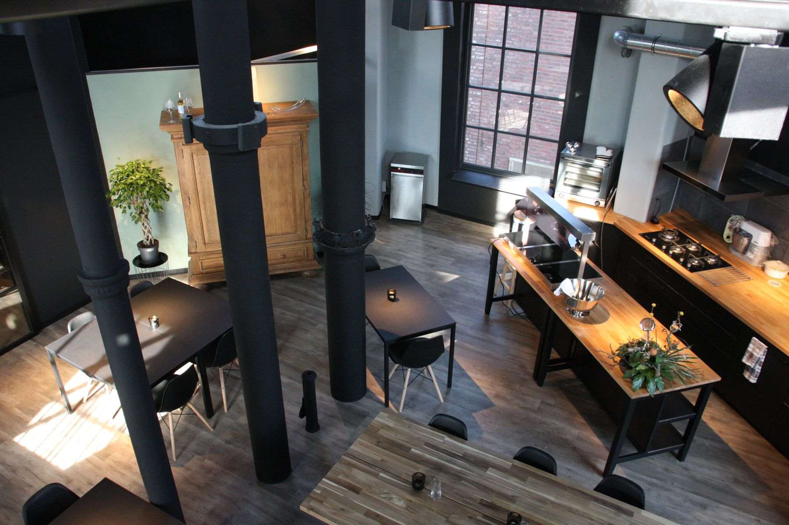
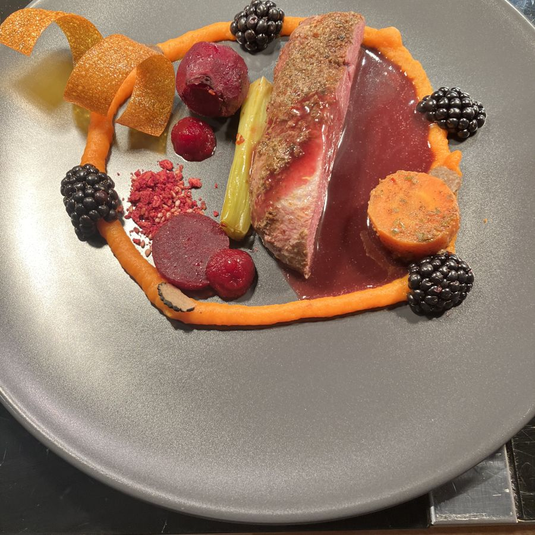
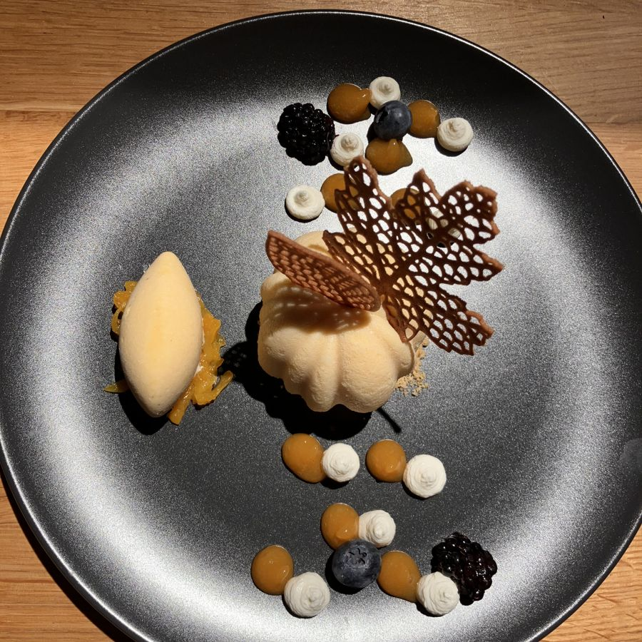
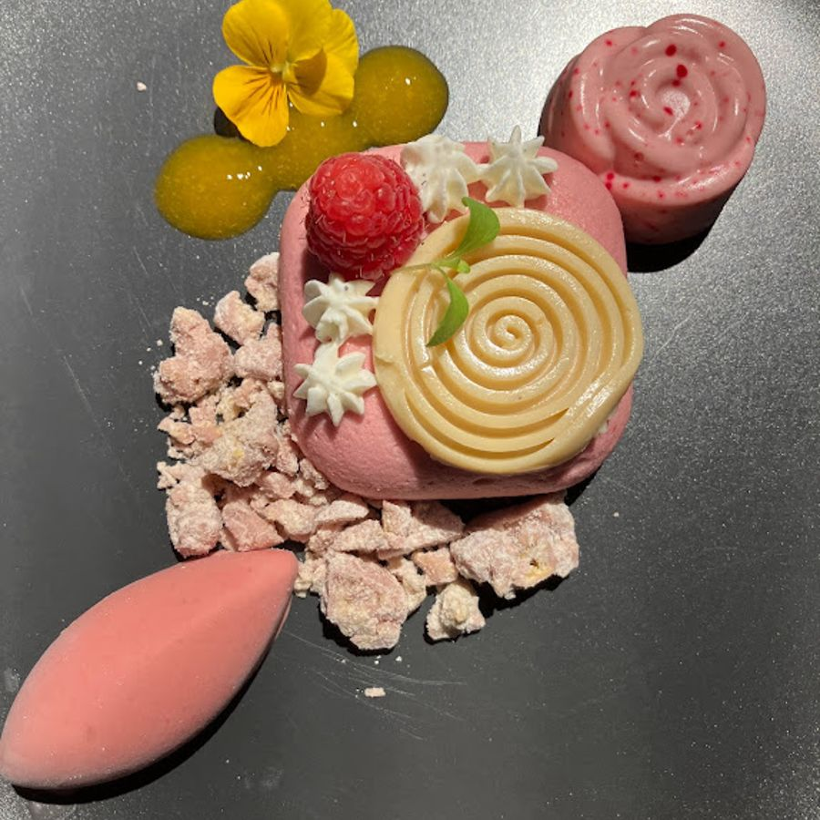
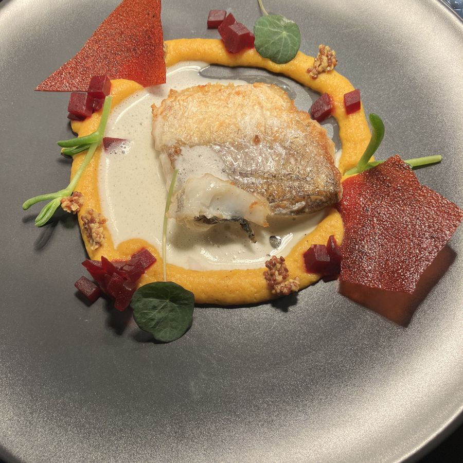
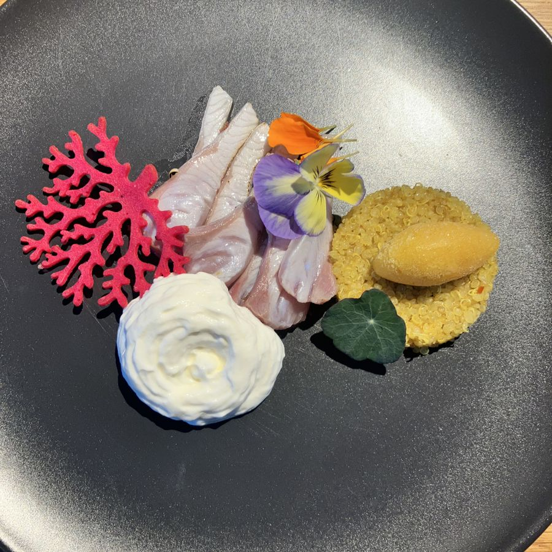
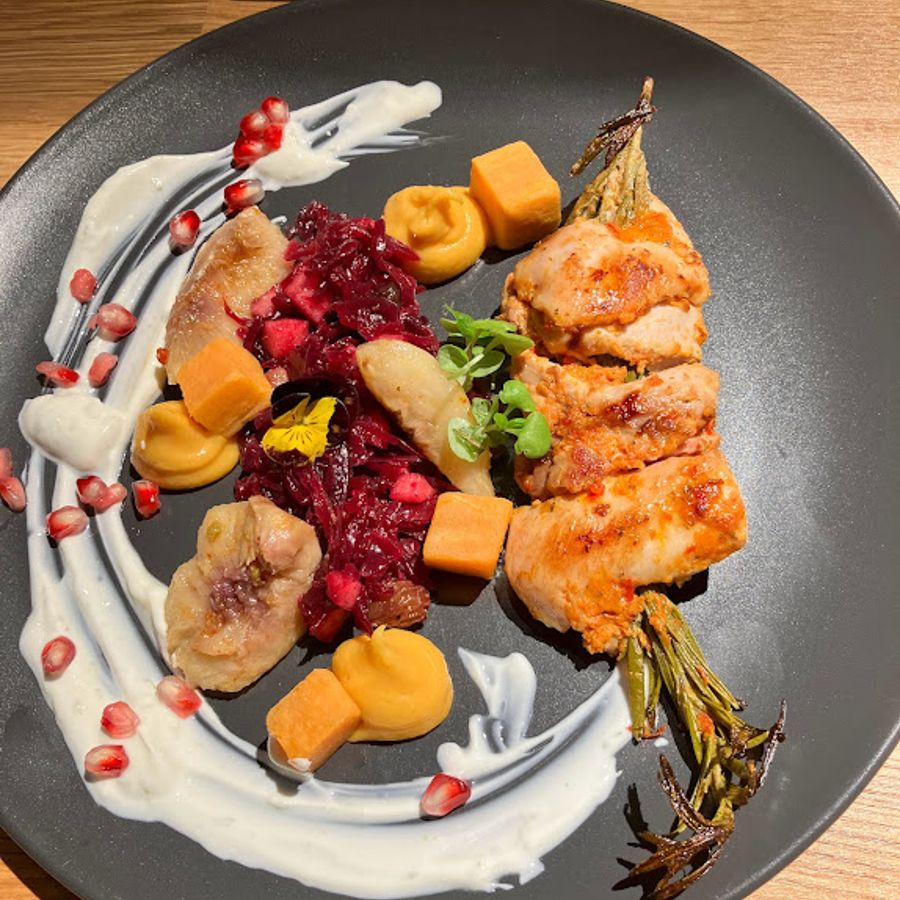
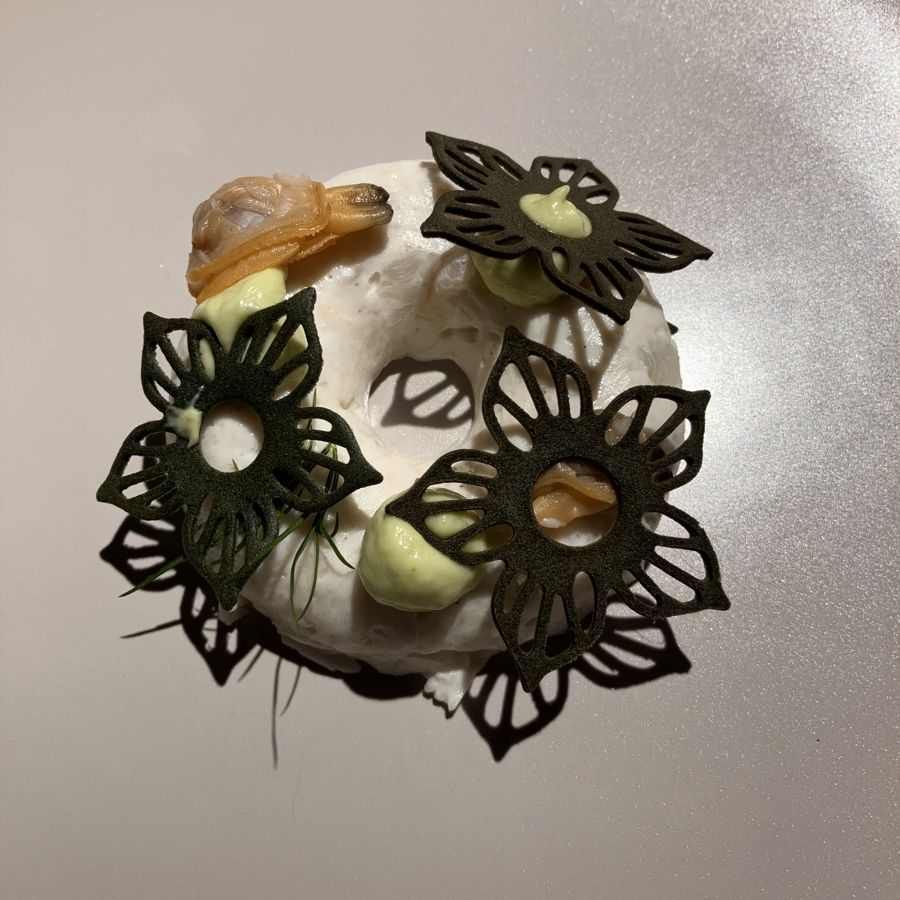
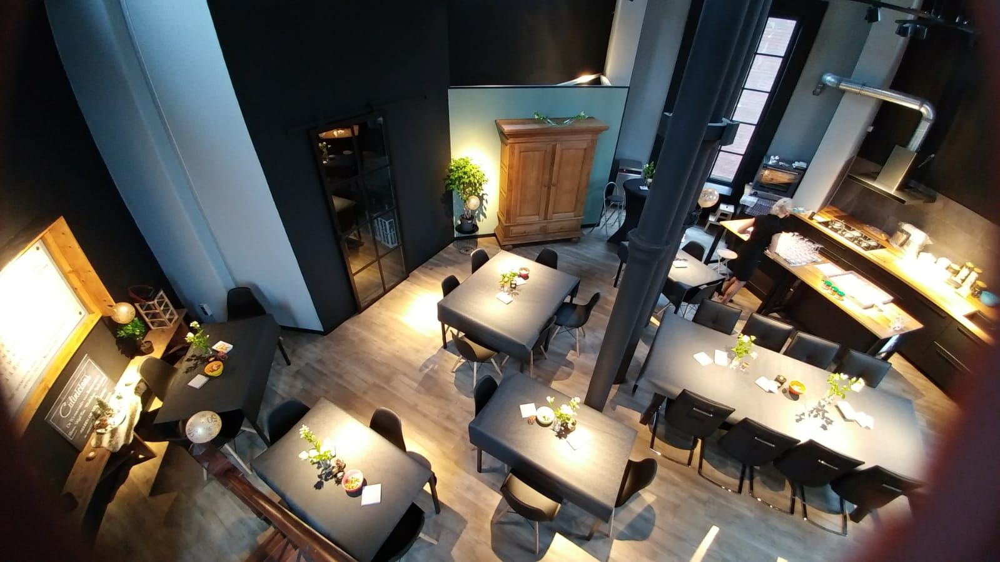
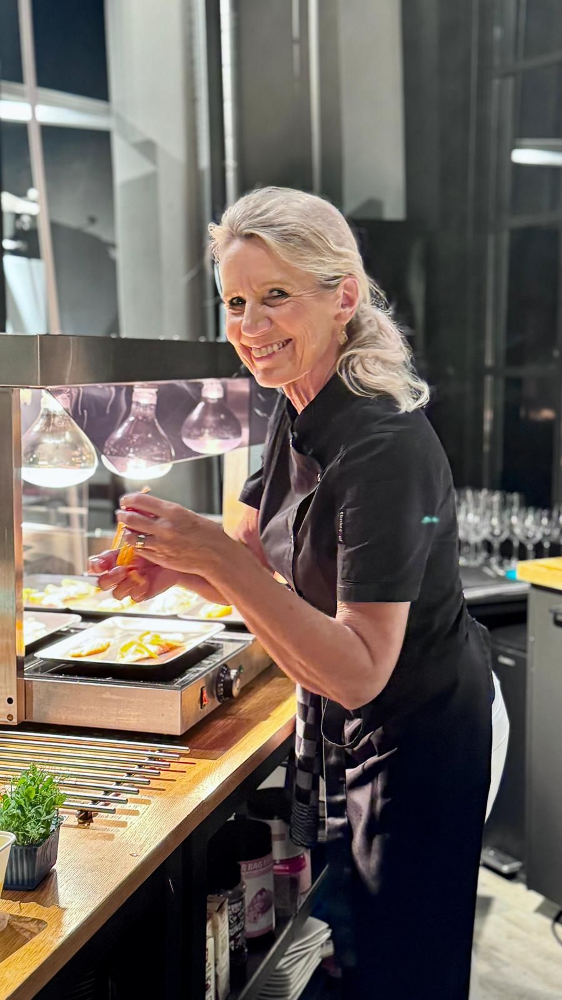

Bijzonder uit eten in de Watertoren van Roosendaal
Een 6-gangen verrassingsdiner in een Rijksmonument uit 1916. Kleinschalig, met maximaal 18 gasten, en alleen op zaterdag.
Het verrassingsdiner
Een avond lang genieten aan tafel. De kookstijl rust op een Franse basis, vol creativiteit en met enthousiasme bereid en uitgeserveerd. Het menu springt in op het seizoen en verandert elke drie maanden, zodat dineren altijd een verrassing blijft.
De keuken staat midden in het restaurant, dus u kijkt mee bij de bereiding van elk gerecht.
- 1Ontvangst tussen 18:30 en 19:00U wordt verwelkomd met een (bruisend) aperitief.
- 2Zes gangen uit de open keukenGeef bij het reserveren gerust aan waar u niet van houdt.
- 3Afsluiten met koffie of theeMet lekkernijen erbij. Reken erop dat u tot ca. 23:00 uur aan tafel zit.

6-gangen diner
€ 105Inclusief (bruisend) aperitief en koffie/thee met lekkernijen.
Bij een wijnarrangement voor de hele tafel staat er ook een karaf water op tafel. Omdat er één kok in de keuken staat, kunnen we helaas geen vegetarische gerechten of rekening houden met allergieën (zoals lactose, gluten of diabetes).
ReserverenUit de keuken
Een greep uit de gerechten van de afgelopen seizoenen.







Dineren in een Rijksmonument
In het centrum van Roosendaal staat sinds 1916 de Watertoren. Sinds 2019 zit Culinicious op de begane grond, en kunnen gasten dit mooie monument ook van binnen zien.
Het restaurant heeft een industriële look, maar is tegelijk heel knus. Op 6 meter hoogte lopen de verwarmingsbuizen en lichtrails, en de oude waterbuizen zijn bewaard gebleven. Er is één lange tafel voor maximaal 6 personen, en tafels voor 2 en 4 personen.
Wat gasten zeggen
"Wat een mooie locatie! De gerechten worden met liefde gemaakt en dat proef je! Heerlijk!"
Anita F. · Google"Geweldig. Wat een zorg wordt hier besteed aan de bereiding van het eten."
Ineke v. R. · Google"Geweldige locatie. Heel speciaal. Heel gezellig. Heerlijk gegeten met onze eigen "club"."
Petra J. · Google"Aanrader....erg verrassend en lekker"
Arjan W. · Google
Koken met passie en plezier
Culinicious is het restaurant van Saskia Provily. Zij doet alles zelf: de inkoop, de voorbereidingen, het koken en het ontvangen van de gasten. Daarom is het restaurant alleen op zaterdag open, met één setting per avond.
"Culinicious staat voor gastvrijheid, klantvriendelijkheid, beleving en goed eten."
Die ingrediënten, in combinatie met de passie en het plezier voor koken, ziet en proeft u terug in de gerechten. Veel gasten reserveren direct na hun diner alweer voor het jaar erna.
Reserveren
Culinicious is alleen open op zaterdag en alleen op reservering. Bekijk de beschikbare data en vraag uw tafel aan.
Reserveer een tafel
De zaterdagen zijn vaak lang van tevoren volgeboekt. Staat uw datum er niet meer tussen? Zet u dan op de wachtlijst. Bij een annulering nemen we graag contact met u op.
Uw reservering is definitief zodra u de bevestiging per mail heeft ontvangen.
Zo vindt u ons
Culinicious in de Watertoren
Nispensestraat 27
4701 CS Roosendaal
De ingang is via de Nispensestraat: via een lang pad en een hek komt u bij de trap naar de ingang (7 treden, met leuning).
Parkeren kan in parkeergarage Centrum aan de Nieuwe Markt.
Openingstijden
Contact
Iemand verrassen met een diner?
Bij Culinicious kunt u ook een cadeaubon kopen. Een leuk cadeau voor een bijzondere avond in de Watertoren.